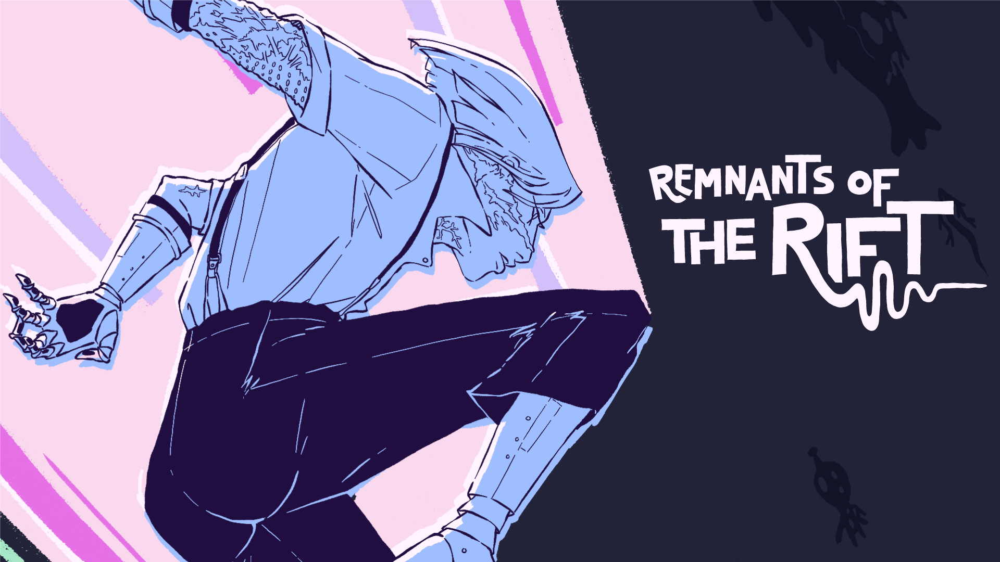
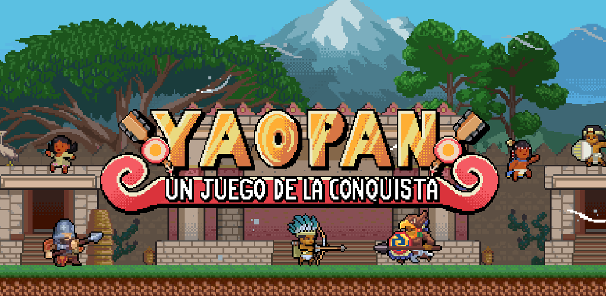
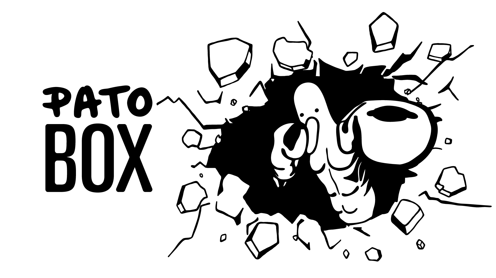

Remnants of the Rift
Strategy-Action · PC & Consoles (TBA) · Bromio · Programmer / 3D Artist / Technical Artist
Selected as Best Game at the PixelATL showcase (2025) and chosen for the Google Indie Fund (awarded 2026).
I'm a Game Developer from Mexico. I'm currently developing indie games at Bromio, where I've been tailoring my career as a Technical Designer. I'm also an instructor, teaching Unity development and 3D animation at Universidad Iberoamericana Puebla and Universidad de las Américas Puebla (UDLAP), and currently pursuing a Master's in Digital Art and New Media at Tecnológico de Monterrey (ITESM).
I have experience across 3D Animation, 3D Production and Programming, which has helped me to:
I believe that iteration is a core part of game development — it helps you understand player experience, motivates continuous learning in a constantly evolving environment, and promotes creativity by exploring new possibilities.

Strategy-Action · PC & Consoles (TBA) · Bromio · Programmer / 3D Artist / Technical Artist
Selected as Best Game at the PixelATL showcase (2025) and chosen for the Google Indie Fund (awarded 2026).

Platformer · iOS & Android · Bromio, Mexico 500 & Mecha Studios · Game Director / Programmer / Technical Artist
.png)
Idle Game · iOS & Android · Bromio · Technical Artist / 3D Animator

Action, Adventure · PC, Xbox, PS4, Nintendo Switch · Bromio, 2Think Studio · 3D Artist
Currently working at Indie Studio, Bromio, I have been tailoring my career as a Programmer and Technical Designer but also I have undertaken various roles based on project needs, including:
In this leadership role, I transitioned from a Technical Artist to the Game Director and Programmer, overseeing the entire development process of Remnants of the Rift. My responsibilities included:
In my role as a Game Director for Yaopan, I played a pivotal role in bridging the gap between the developer team and the researchers. The project aimed to create an immersive platformer game centered around "The Conquest of Mexico," highlighting significant historical events. My responsibilities included:
Designing and teaching the Unity development course: C# programming, gameplay systems design, and the full production pipeline of a video game.
Designed and taught the 3D modeling and animation course, from technical fundamentals to production-ready assets.
Taught the Game Design course — one of my first experiences as a university instructor.
Tecnológico de Monterrey (ITESM)
In progress · est. completion Dec 2027
Tecnológico de Monterrey (ITESM)
2012 – 2017
Personal projects outside of Bromio
Game poem · ~5 min · Emmanuel Castro Flores · No content warnings
How to play: Use the arrow keys to move and the space bar to interact with the dialogue.
In cybersecurity, a system is vulnerable when it has flaws or weaknesses that can be exploited — meaning a vulnerable system is an unwanted one, requiring locks and safeguards to be reinforced. But once it's locked down, the code closes itself off and becomes proprietary. In closed code, we don't know what processes exist behind it; the algorithm is hidden, and with it, the intentions, biases, and opinions of the people behind the software. This opacity isn't neutral — it also conceals a political decision that privatizes know-how and concentrates power.
In an environment like this, it's actually the user who runs the greatest risk of being vulnerable. Inhabiting a closed digital space, their behavior is shaped by an interface that dictates what can be seen and done. In this false interactivity full of predetermined options, the user is rewarded for following rules designed to benefit the system's owners. The user is exposed to harm — being cracked open by the system itself.
In this context, should we close ourselves off to the system in the same way? Or should we seek out that same vulnerability within the system to level the playing field? Vulnerability is also the capacity to recognize, accept, and express one's own feelings without defensive barriers — exposing oneself to being affected by one's surroundings. Far from being a weakness, it's considered an essential strength for building deep, authentic connections between people. Interfaces and code are political, so users reclaiming them is political too. We must breach the system, hack it, understand it, reclaim this meeting place, remove the barriers that keep us from being ourselves, and build the connections that let us live.
Interactive · p5.js
An interactive piece built in p5.js around a solid foundation of simple geometric creatures. The inspiration comes from abstracting birds — hence "Birbs" — while exploring interesting creatures beyond that. The goal is simply to observe and interact: what will they do?
The idea is to extend this to other media and other behaviors.